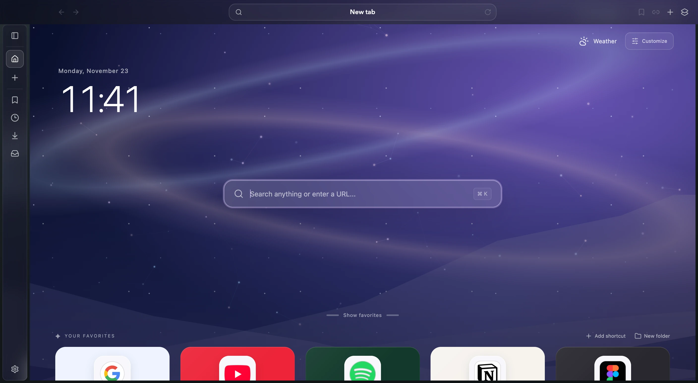

Keep what you need in sight.
Tabs sit in a slim vertical rail. Drag up to three sites into Favorites so they’re there the next time you need them.
Keep tabs on the side, search from anywhere, and make the space between pages your own.
Apple Silicon · macOS 13 or later · Preview

A home for your favorite sites, with a look that’s yours.
Your tabs, searches, and favorite places stay close, so you can get back to what you came to do.
Tabs sit in a slim vertical rail. Drag up to three sites into Favorites so they’re there the next time you need them.
Pinch in to see your open tabs float into view. Hover and pinch out to open one. Swipe with two fingers to go back or forward.
Press ⌘ K for quick search, recent searches, suggestions, and direct links. Type a question, an address, or a calculation.
Open an isolated private window, choose permissions per site, and control ads, trackers, and live suggestions in Settings.

Download the NOVA desktop preview, open the disk image, and drag NOVA into Applications.
Download NOVA for MacRequires Apple Silicon and macOS 13 or later. This preview is ad hoc signed and has not been notarized by Apple. macOS may require approval before opening it.
Preview release and checksum